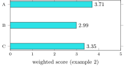

Definition
total score of supplier ; weight of criterion ; score of supplier on criterion (5 excellent, 4 good, 3 adequate, 2 poor, 1 very poor);
 criteria. Goals of supplier
assessment: select the best supplier, discover new suppliers (vendor list),
judge medium/long-term relations, stimulate improvement or a "new start".
criteria. Goals of supplier
assessment: select the best supplier, discover new suppliers (vendor list),
judge medium/long-term relations, stimulate improvement or a "new start".
Worked example
Example 1
| Criterion | Weight | Supplier 1 | Supplier 2 | Supplier 3 |
|---|---|---|---|---|
| Quality (product) | 30% | 4 | 5 | 2 |
| Price (product) | 25% | 3 | 3 | 5 |
| Warranty (product) | 15% | 4 | 2 | 3 |
| Technical competence | 10% | 4 | 5 | 1 |
| Flexibility | 10% | 5 | 3 | 2 |
| Financial situation | 8% | 3 | 2 | 4 |
| Production capacity | 2% | 4 | 4 | 5 |
| Total | 100% | 3.77 | 3.59 | 3.02 |
Supplier 1: → chosen. (Recomputing Supplier 3 gives 3.02; a printed 3.62 does not match its scores.)
Example 2 (14 criteria)
| Criterion | W | A | B | C |
|---|---|---|---|---|
| Price | 25 | 5 | 3 | 2 |
| Quality | 20 | 2 | 3 | 5 |
| Warranty | 5 | 5 | 2 | 3 |
| On-time delivery | 15 | 4 | 2 | 3 |
| Quantity accuracy | 5 | 5 | 5 | 5 |
| Technical skills | 5 | 2 | 3 | 4 |
| Financial stability | 5 | 4 | 5 | 2 |
| Quality certificates | 5 | 5 | 2 | 1 |
| Flexibility | 3 | 2 | 2 | 5 |
| Workforce situation | 3 | 2 | 4 | 5 |
| Production capacity | 3 | 3 | 5 | 3 |
| Management skills | 2 | 5 | 4 | 3 |
| Sales skills | 2 | 4 | 2 | 5 |
| After-sales service | 2 | 1 | 2 | 5 |
Totals: A = 3.71, B = 2.99, C = 3.35 → supplier A, thanks to price (25%) despite poor quality.
Enel uses vendor rating to monitor suppliers and contractors: the IVR (Vendor Rating Index) is a weighted average of three categories — quality, punctuality, correctness.
Model
Steps: choose criteria (product and supplier) → assign weights (management judgement or AHP pairwise comparisons) → score each supplier → weighted sum → rank → sensitivity check on weights. Complement with TCO for cost.
Pitfall
Weights must sum to 100%. A high total can hide a fatal score (quality 2): set minimum thresholds. Scores are judgements: document how they were given.
Recall
Write the formula; recompute Supplier 1 and Supplier A; explain why A wins in example 2 even with the worst quality.
Picture

The ranking depends on weights: price-heavy weights favour A.